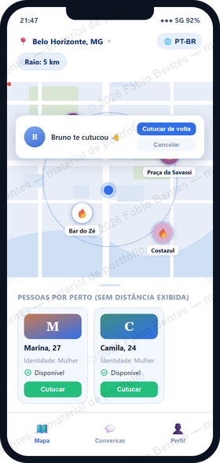

Em desenvolvimento · código privado
Zurvo
Registrado no INPI · Processo nº 512026009066-0
Aplicativo de encontros que mostra no mapa onde há movimento por perto, com chat e cutucadas em tempo real, para Android, iOS e Web.
Construído de ponta a ponta: API, banco de dados, aplicativo Flutter e aplicação web, com contrato OpenAPI único entre os clientes, autenticação segura e envio de fotos direto ao armazenamento.
- Java 25
- Spring Boot 4.1
- PostgreSQL
- WebSocket
- Flutter
- Svelte 5
- OpenAPI

Protótipo com dados fictícios